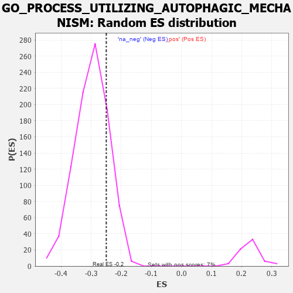

| | | Dataset | 7d |
| Phenotype | NoPhenotypeAvailable |
| Upregulated in class | na_neg |
| GeneSet | GO_PROCESS_UTILIZING_AUTOPHAGIC_MECHANISM |
| Enrichment Score (ES) | -0.24984741 |
| Normalized Enrichment Score (NES) | -0.8379223 |
| Nominal p-value | 0.8126338 |
| FDR q-value | 0.981148 |
| FWER p-Value | 1.0 |
Table: GSEA Results Summary
 Fig 1: Enrichment plot: GO_PROCESS_UTILIZING_AUTOPHAGIC_MECHANISM
Fig 1: Enrichment plot: GO_PROCESS_UTILIZING_AUTOPHAGIC_MECHANISM
Profile of the Running ES Score & Positions of GeneSet Members on the Rank Ordered List
| PROBE | GENE SYMBOL | GENE_TITLE | RANK IN GENE LIST | RANK METRIC SCORE | RUNNING ES | CORE ENRICHMENT | | 1 | ULK1 | | | 272 | 0.875 | -0.0189 | No |
| 2 | HGF | | | 276 | 0.870 | -0.0034 | No |
| 3 | DAPK2 | | | 343 | 0.754 | 0.0019 | No |
| 4 | GSK3A | | | 351 | 0.745 | 0.0145 | No |
| 5 | HTRA2 | | | 527 | 0.621 | 0.0034 | No |
| 6 | TFEB | | | 839 | 0.522 | -0.0268 | No |
| 7 | ACBD5 | | | 899 | 0.506 | -0.0252 | No |
| 8 | WDR6 | | | 916 | 0.504 | -0.0181 | No |
| 9 | STX17 | | | 940 | 0.497 | -0.0120 | No |
| 10 | ATG10 | | | 970 | 0.490 | -0.0068 | No |
| 11 | UBA5 | | | 982 | 0.488 | 0.0007 | No |
| 12 | AKT1 | | | 1040 | 0.476 | 0.0021 | No |
| 13 | XPA | | | 1070 | 0.469 | 0.0069 | No |
| 14 | FOXK2 | | | 1081 | 0.467 | 0.0141 | No |
| 15 | SRC | | | 1128 | 0.459 | 0.0166 | No |
| 16 | SCOC | | | 1153 | 0.453 | 0.0217 | No |
| 17 | EMC6 | | | 1183 | 0.449 | 0.0262 | No |
| 18 | KAT8 | | | 1231 | 0.442 | 0.0282 | No |
| 19 | PARL | | | 1290 | 0.432 | 0.0287 | No |
| 20 | ATG12 | | | 1310 | 0.427 | 0.0340 | No |
| 21 | EXOC1 | | | 1403 | 0.409 | 0.0297 | No |
| 22 | QSOX1 | | | 1550 | 0.382 | 0.0180 | No |
| 23 | NPRL3 | | | 1592 | 0.375 | 0.0196 | No |
| 24 | SNX14 | | | 1764 | 0.343 | 0.0039 | No |
| 25 | UVRAG | | | 1831 | 0.332 | 0.0015 | No |
| 26 | GATA4 | | | 1837 | 0.330 | 0.0069 | No |
| 27 | TRIM5 | | | 1852 | 0.327 | 0.0111 | No |
| 28 | FOXK1 | | | 1859 | 0.326 | 0.0162 | No |
| 29 | UBXN6 | | | 2021 | 0.302 | 0.0011 | No |
| 30 | VPS25 | | | 2033 | 0.300 | 0.0052 | No |
| 31 | SNF8 | | | 2119 | 0.288 | -0.0004 | No |
| 32 | NPRL2 | | | 2184 | 0.278 | -0.0036 | No |
| 33 | MET | | | 2430 | 0.240 | -0.0305 | No |
| 34 | PGAM5 | | | 2457 | 0.235 | -0.0296 | No |
| 35 | HUWE1 | | | 2506 | 0.225 | -0.0316 | No |
| 36 | ATG4C | | | 2507 | 0.225 | -0.0275 | No |
| 37 | WIPI2 | | | 2618 | 0.210 | -0.0377 | No |
| 38 | BAG3 | | | 2620 | 0.209 | -0.0341 | No |
| 39 | KAT5 | | | 2644 | 0.206 | -0.0332 | No |
| 40 | VPS4A | | | 2654 | 0.205 | -0.0307 | No |
| 41 | PHB2 | | | 2712 | 0.197 | -0.0344 | No |
| 42 | SCFD1 | | | 2783 | 0.185 | -0.0400 | No |
| 43 | BECN1 | | | 2828 | 0.179 | -0.0423 | No |
| 44 | DAPK3 | | | 2880 | 0.169 | -0.0458 | No |
| 45 | MTM1 | | | 2893 | 0.168 | -0.0442 | No |
| 46 | UFL1 | | | 3041 | 0.144 | -0.0604 | No |
| 47 | FEZ1 | | | 3055 | 0.142 | -0.0595 | No |
| 48 | KEAP1 | | | 3063 | 0.141 | -0.0578 | No |
| 49 | ATG9A | | | 3069 | 0.141 | -0.0559 | No |
| 50 | TIGAR | | | 3091 | 0.138 | -0.0561 | No |
| 51 | MTMR8 | | | 3200 | 0.122 | -0.0677 | No |
| 52 | RAB8A | | | 3319 | 0.102 | -0.0809 | No |
| 53 | EPG5 | | | 3368 | 0.094 | -0.0853 | No |
| 54 | VPS16 | | | 3370 | 0.093 | -0.0838 | No |
| 55 | ATG3 | | | 3471 | 0.081 | -0.0951 | No |
| 56 | HGS | | | 3476 | 0.080 | -0.0941 | No |
| 57 | CDK5 | | | 3480 | 0.080 | -0.0930 | No |
| 58 | UFM1 | | | 3506 | 0.077 | -0.0948 | No |
| 59 | MAPK3 | | | 3589 | 0.062 | -0.1042 | No |
| 60 | WAC | | | 3618 | 0.056 | -0.1068 | No |
| 61 | FIS1 | | | 3654 | 0.051 | -0.1103 | No |
| 62 | VTA1 | | | 3697 | 0.043 | -0.1149 | No |
| 63 | SYT11 | | | 3732 | 0.036 | -0.1186 | No |
| 64 | ATG2B | | | 3756 | 0.033 | -0.1209 | No |
| 65 | VMP1 | | | 3803 | 0.027 | -0.1263 | No |
| 66 | SMG1 | | | 3843 | 0.021 | -0.1309 | No |
| 67 | CHMP6 | | | 3977 | -0.003 | -0.1478 | No |
| 68 | VPS35 | | | 3989 | -0.006 | -0.1491 | No |
| 69 | SNX32 | | | 4012 | -0.010 | -0.1518 | No |
| 70 | ATG5 | | | 4051 | -0.016 | -0.1563 | No |
| 71 | WDR41 | | | 4053 | -0.016 | -0.1562 | No |
| 72 | MTOR | | | 4114 | -0.025 | -0.1634 | No |
| 73 | WDFY3 | | | 4119 | -0.026 | -0.1635 | No |
| 74 | EXOC8 | | | 4120 | -0.026 | -0.1630 | No |
| 75 | ABL1 | | | 4125 | -0.027 | -0.1630 | No |
| 76 | VPS51 | | | 4137 | -0.030 | -0.1639 | No |
| 77 | EXOC4 | | | 4182 | -0.039 | -0.1688 | No |
| 78 | RRAGD | | | 4183 | -0.039 | -0.1681 | No |
| 79 | SESN1 | | | 4192 | -0.041 | -0.1684 | No |
| 80 | STAM2 | | | 4193 | -0.041 | -0.1676 | No |
| 81 | VPS11 | | | 4202 | -0.041 | -0.1679 | No |
| 82 | RRAGA | | | 4223 | -0.046 | -0.1696 | No |
| 83 | VTI1A | | | 4224 | -0.046 | -0.1688 | No |
| 84 | RPTOR | | | 4252 | -0.050 | -0.1713 | No |
| 85 | NRBP2 | | | 4274 | -0.055 | -0.1730 | No |
| 86 | AUP1 | | | 4315 | -0.062 | -0.1770 | No |
| 87 | ADRB2 | | | 4352 | -0.068 | -0.1804 | No |
| 88 | MTMR9 | | | 4387 | -0.074 | -0.1834 | No |
| 89 | CDC37 | | | 4446 | -0.084 | -0.1893 | No |
| 90 | LRRK2 | | | 4467 | -0.087 | -0.1902 | No |
| 91 | VPS28 | | | 4582 | -0.114 | -0.2027 | No |
| 92 | CHMP3 | | | 4660 | -0.129 | -0.2102 | No |
| 93 | ITPR1 | | | 4661 | -0.130 | -0.2078 | No |
| 94 | PIM2 | | | 4789 | -0.155 | -0.2212 | No |
| 95 | FBXW7 | | | 4816 | -0.161 | -0.2216 | No |
| 96 | VPS36 | | | 4845 | -0.167 | -0.2222 | No |
| 97 | RAB24 | | | 4868 | -0.171 | -0.2219 | No |
| 98 | ULK3 | | | 4873 | -0.171 | -0.2193 | No |
| 99 | CLU | | | 4889 | -0.174 | -0.2180 | No |
| 100 | MARK2 | | | 4899 | -0.177 | -0.2159 | No |
| 101 | VAMP8 | | | 4905 | -0.179 | -0.2133 | No |
| 102 | TLK2 | | | 4909 | -0.179 | -0.2105 | No |
| 103 | EP300 | | | 4941 | -0.186 | -0.2110 | No |
| 104 | EXOC7 | | | 4948 | -0.188 | -0.2084 | No |
| 105 | ATG4B | | | 4968 | -0.192 | -0.2073 | No |
| 106 | WDR81 | | | 5024 | -0.203 | -0.2107 | No |
| 107 | DRD2 | | | 5088 | -0.221 | -0.2147 | No |
| 108 | FLCN | | | 5140 | -0.235 | -0.2169 | No |
| 109 | HDAC6 | | | 5183 | -0.244 | -0.2179 | No |
| 110 | ATM | | | 5210 | -0.249 | -0.2167 | No |
| 111 | RAB7A | | | 5302 | -0.271 | -0.2234 | No |
| 112 | FZD5 | | | 5386 | -0.292 | -0.2287 | No |
| 113 | VPS39 | | | 5533 | -0.329 | -0.2413 | No |
| 114 | WDR24 | | | 5568 | -0.338 | -0.2395 | No |
| 115 | LARP1 | | | 5616 | -0.349 | -0.2392 | No |
| 116 | MTCL1 | | | 5697 | -0.374 | -0.2426 | Yes |
| 117 | DAP | | | 5732 | -0.386 | -0.2400 | Yes |
| 118 | MTMR3 | | | 5809 | -0.408 | -0.2422 | Yes |
| 119 | ANXA7 | | | 5827 | -0.413 | -0.2369 | Yes |
| 120 | ATG7 | | | 5858 | -0.420 | -0.2331 | Yes |
| 121 | STK11 | | | 5922 | -0.443 | -0.2331 | Yes |
| 122 | UFC1 | | | 5925 | -0.443 | -0.2253 | Yes |
| 123 | XBP1 | | | 6011 | -0.475 | -0.2275 | Yes |
| 124 | ATG13 | | | 6110 | -0.508 | -0.2308 | Yes |
| 125 | ROCK1 | | | 6152 | -0.520 | -0.2266 | Yes |
| 126 | IFT88 | | | 6335 | -0.590 | -0.2391 | Yes |
| 127 | NPC1 | | | 6364 | -0.602 | -0.2317 | Yes |
| 128 | RALB | | | 6399 | -0.617 | -0.2249 | Yes |
| 129 | HSPB8 | | | 6408 | -0.621 | -0.2146 | Yes |
| 130 | RAB43 | | | 6419 | -0.628 | -0.2044 | Yes |
| 131 | HERC1 | | | 6467 | -0.647 | -0.1987 | Yes |
| 132 | MFN1 | | | 6502 | -0.663 | -0.1910 | Yes |
| 133 | CLN3 | | | 6580 | -0.699 | -0.1881 | Yes |
| 134 | RNF41 | | | 6588 | -0.703 | -0.1762 | Yes |
| 135 | RAB5A | | | 6655 | -0.741 | -0.1711 | Yes |
| 136 | VPS18 | | | 6659 | -0.743 | -0.1580 | Yes |
| 137 | GSK3B | | | 6719 | -0.768 | -0.1516 | Yes |
| 138 | VPS41 | | | 6850 | -0.841 | -0.1529 | Yes |
| 139 | FBXL2 | | | 6956 | -0.911 | -0.1497 | Yes |
| 140 | DNM1L | | | 6963 | -0.913 | -0.1339 | Yes |
| 141 | MFSD8 | | | 7067 | -0.977 | -0.1293 | Yes |
| 142 | RAB1A | | | 7096 | -0.993 | -0.1148 | Yes |
| 143 | TSPO | | | 7194 | -1.065 | -0.1078 | Yes |
| 144 | MFN2 | | | 7208 | -1.081 | -0.0899 | Yes |
| 145 | CPTP | | | 7477 | -1.373 | -0.0991 | Yes |
| 146 | VDAC1 | | | 7512 | -1.409 | -0.0779 | Yes |
| 147 | BOK | | | 7715 | -1.817 | -0.0706 | Yes |
| 148 | CASP3 | | | 7747 | -1.902 | -0.0400 | Yes |
| 149 | DAPK1 | | | 7950 | -3.767 | 0.0027 | Yes |
Table: GSEA details [plain text format]

Fig 2: GO_PROCESS_UTILIZING_AUTOPHAGIC_MECHANISM: Random ES distribution
Gene set null distribution of ES for GO_PROCESS_UTILIZING_AUTOPHAGIC_MECHANISM